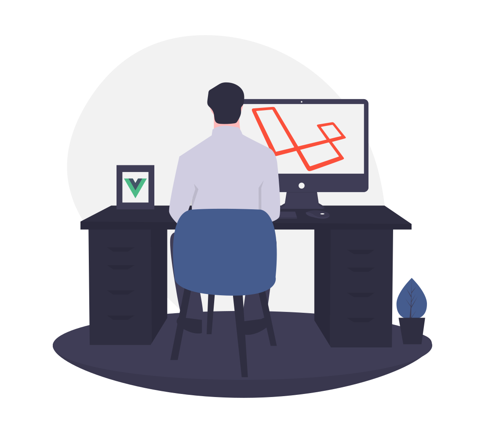
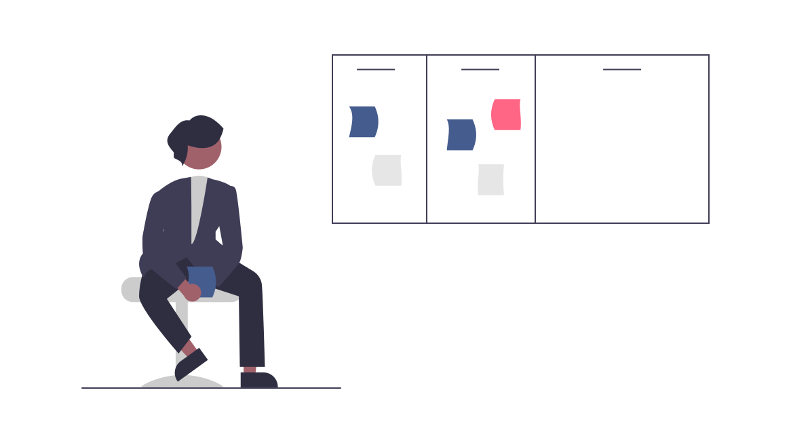

SISTEMA DE GESTIÓN DEPORTIVA
Si ingresas al sistema como analista, tu objetivo sera el
de analizar en detalle el juego de manera grupal e individual para identificar patrones de comportamiento.
Generaras instancias deportivas y sus correspondientes estadisticas, las cuales seran almacenadas en una gran
base de datos deportiva, además de ver las competencias de los equipos y jugadores que ayuden en la toma de decisiones.
Proporcionar soporte y liberar de carga a los miembros del staff y de la dirección deportiva.
Dentro del sistema tendras la tarea de cargar todos los partidos que se jugaran, además del campeonato y subir las estadisticas de los jugadores y el partido!
Dentro del sistema tendras la tarea de cargar todos los partidos que se jugaran, además del campeonato y subir las estadisticas de los jugadores y el partido!
Al ingresar al sistema como entrenador,
quiere decir que eres la persona encargada del entrenamiento físico, mental y técnico de un atleta o de
un grupo de deportistas. Tu gestión del personal es muy importante para la organización de un equipo deportivo.
Al ser entrenador en el sistema ¡podras crear tu equipo! además tendras la opción de luego visualizar todos los partidos creados y ver las estadisticas de tus jugadores asi veras su rendimiento en el equipo y como va mejorando
Al ser entrenador en el sistema ¡podras crear tu equipo! además tendras la opción de luego visualizar todos los partidos creados y ver las estadisticas de tus jugadores asi veras su rendimiento en el equipo y como va mejorando
Hola! si entras al sistema como deportista sos una persona que
se dedica al deporte, en cualquiera de sus disciplinas, es decir, que practica cualquier
actividad física, bien sea como aficionado o profesional.
En S.I.G.D. podras ver información detallada sobre tu equipo además de poder ver tus campeonatos y algo mucho más asombroso...¡tus estadisticas personales!
En S.I.G.D. podras ver información detallada sobre tu equipo además de poder ver tus campeonatos y algo mucho más asombroso...¡tus estadisticas personales!
Al ingresar en el sistema como Administrador, eres
la persona que tiene la responsabilidad de implementar,
configurar, mantener, monitorizar, documentar y asegurar el correcto funcionamiento de un
sistema informático, o algún aspecto de este.
Al ingresar al sistema podras tener acceso a todas las funcionalidades de la misma, como por ejemplo cargar las estadisticas de un partido o campeonato que se jugo o además crear estos mismos y más accesos que te ayudaran a llevar el control de todo el sistema S.I.G.D.
Al ingresar al sistema podras tener acceso a todas las funcionalidades de la misma, como por ejemplo cargar las estadisticas de un partido o campeonato que se jugo o además crear estos mismos y más accesos que te ayudaran a llevar el control de todo el sistema S.I.G.D.


Al ingresar a el sistema como Scout, quiere decir que tu actividad consiste en
analizar jugadores y determinar características para seleccionarlos para nuestro club. Analizar
jugadores propios en partido o entrenamiento para extraer información de cualquiera de las estructuras
del jugador y así mejorar o potenciar su rendimiento.
En el sistema podras ver los partidos del campeonato, estadisticas que podras visualizar en el menú de arriba donde encontraras las estadisticas detalladas de los jugadores, además de una impresionante grafica que contendra las comparativa de los jugadores más destacados y en partidos encontraras todos los partidos del campeonato
En el sistema podras ver los partidos del campeonato, estadisticas que podras visualizar en el menú de arriba donde encontraras las estadisticas detalladas de los jugadores, además de una impresionante grafica que contendra las comparativa de los jugadores más destacados y en partidos encontraras todos los partidos del campeonato
Hola! Si accedes en el sistema como juez,
Eres es un elemento importante en el deporte, en cualquiera de
sus manifestaciones, él es parte inseparable de la actividad sus apreciaciones y
decisiones son las que van a determinar, acertada o desacertadamente, el resultado.
Dentro del sistema tendras un montón de funcionalidades dentro de la pagina como ver los partidos por jugar y además los ya jugados, ver todos los campeonatos y por ultimo y lo más emocionante es que ¡tendras la opcion de ver las estadisticas de los partidos!
Dentro del sistema tendras un montón de funcionalidades dentro de la pagina como ver los partidos por jugar y además los ya jugados, ver todos los campeonatos y por ultimo y lo más emocionante es que ¡tendras la opcion de ver las estadisticas de los partidos!

Al ingresar en el sistema como administrativo, eres
aquella persona que se dedica al conjunto de medios y actividades necesarias para
llevar a cabo y desarrollar una correcta utilización del deporte, con la misión de permitirle
a los usuarios ejecutar sus actividades en las mejores condiciones posibles
En el sistema podras asignar los tipos de usuarios, a si mismo también tendras cargar los usuarios y viualizar los usuarios que ingresaste!
En el sistema podras asignar los tipos de usuarios, a si mismo también tendras cargar los usuarios y viualizar los usuarios que ingresaste!